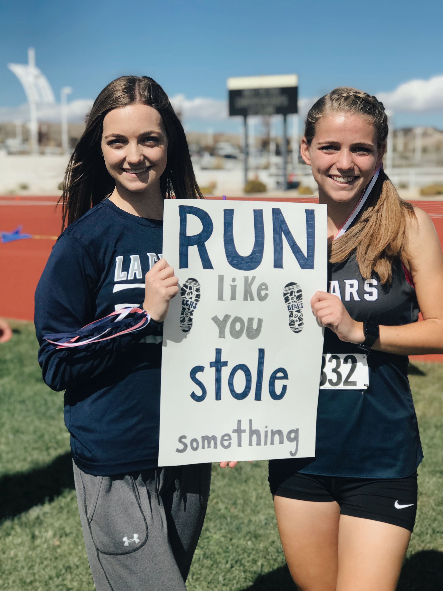

so you want to get to know me?
You're in the right place! I'm an avid cookie dough eater, I think Christmastime starts well before November, I firmly believe that forks are the most superior utensil and that ice cream is significantly better if you eat it with one. I'm from a big family and am the second oldest of seven kids. I'm starting a mission for the Church of Jesus Christ of Latter-Day Saints next month in the same mission my older sister went to!
I graduated from high school in spring 2021 and now attend Brigham Young University (click the link to know more about the best school ever!). In high school, I ran cross country and track. I even got the opportunity to run on the BYU track/cross country team for a few weeks but decided to quit. I still like to run when I can find time and motivation but my favorite exercise is laughing. Check out this video that will definitely make you laugh!
Take a look at My Family

Some things I like! My Interests


Want to get in touch? Contact Me!
Email: brynnesplin@gmail.com
Phone: (635) 981-8654